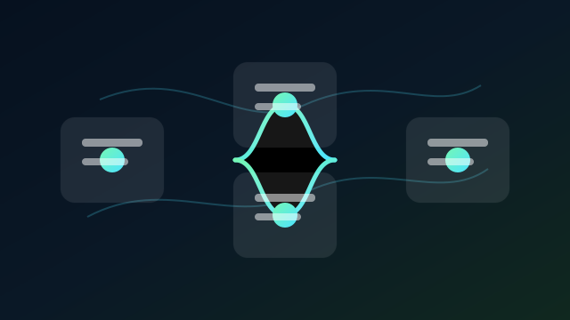

Overview
I use Gemini, ChatGPT, NotebookLM, and Codex as complementary tools rather than interchangeable chatbots. Each tool supports a defined stage, with clear inputs, reusable instructions, human review, and a practical final output.
Applied AI
A practical approach to selecting and connecting AI tools for research, communication, coding, and repeatable work.

I use Gemini, ChatGPT, NotebookLM, and Codex as complementary tools rather than interchangeable chatbots. Each tool supports a defined stage, with clear inputs, reusable instructions, human review, and a practical final output.
Faster research and execution, more consistent communication, less repetitive work, and a clearer path from idea to usable output.
Selected supporting materials can be shared upon request.